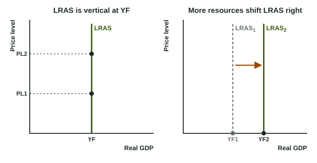

Long-Run Aggregate Supply (LRAS)
In the long run, nominal wages and input prices catch up with the price level, so real output depends only on resources and technology.
Part 1 · Hook
Why this matters
Part 2 · Before you start
What this builds on
Part 3 · Prerequisite check
Quick check before you start
1. What does an outward shift of a production possibilities curve show?
- The economy can produce more of both goods
- The economy is using fewer resources
- Unemployment has risen
- Prices have risen
Show the answer
An outward PPC shift means more resources or better technology: more of both goods is possible.
- Correct: The economy can produce more of both goods:
- The economy is using fewer resources:
- Unemployment has risen:
- Prices have risen:
2. Why does the SRAS curve slope upward?
- Nominal wages and some prices are sticky in the short run
- Households buy more when prices rise
- The government raises spending when prices rise
- Firms' costs rise as fast as prices
Show the answer
With sticky wages, a higher price level makes extra output profitable.
- Correct: Nominal wages and some prices are sticky in the short run:
- Households buy more when prices rise:
- The government raises spending when prices rise:
- Firms' costs rise as fast as prices:
3. What is potential output?
- Real GDP when the economy is at full employment
- The highest real GDP ever recorded
- Real GDP in a recession
- Nominal GDP divided by population
Show the answer
Potential (full-employment) output is the real GDP produced when unemployment is at its natural rate.
- Correct: Real GDP when the economy is at full employment:
- The highest real GDP ever recorded:
- Real GDP in a recession:
- Nominal GDP divided by population:
Part 4 · See it
See it first

Part 5 · Step by step
How it works, step by step
- The price level rises and, over time, wages and input prices rise just as muchproduction is no more profitable than before
- Production is no more profitablereal output returns to full-employment output
- Output is at full employment at every price levelLRAS is vertical at YF
- The economy gains resources or better technologyYF rises: LRAS shifts right and the PPC shifts out
Part 6 · Key ideas
Key ideas
- In the long run all wages and prices adjust, so real output is set by resources and technology, not by the price level.
- Long-run aggregate supply (LRAS) is vertical at full-employment output (potential output, YF).
- LRAS shifts right with more or better labor, more capital, more land and resources, or better technology; it shifts left when productive capacity is lost.
- LRAS and the PPC tell the same story: when LRAS shifts right, the PPC shifts out.
- Changes in spending (AD) or in the price level do not move LRAS.
Part 7 · Misconception
A common mistake
The wrong idea: If the price level keeps rising, firms will keep producing more, so a higher price level raises real output for good.
What actually happens: Higher prices raise output only while wages lag. Once wages and input prices catch up, output is back at full employment: LRAS is vertical.
Part 8 · Check yourself
Check yourself
Exam-style questions. Anything you miss goes into your review queue.
1. Why is the long-run aggregate supply curve vertical?
- In the long run firms are unable to raise their prices, so they stop expanding output
- In the long run the economy runs out of extra workers, so firms stop hiring more
- Wages and prices fully adjust, so output depends on resources, not the price level
- In the long run demand for goods stops changing
Show the answer
When wages and prices all adjust, a change in the price level changes costs as much as revenues, so output returns to potential: LRAS is vertical at full-employment output.
- In the long run firms are unable to raise their prices, so they stop expanding output: In the long run every price can change. It is because all prices and wages adjust that output does not respond.
- In the long run the economy runs out of extra workers, so firms stop hiring more: Output can rise above full employment for a time. The curve is vertical because wages catch up in the long run.
- Correct: Wages and prices fully adjust, so output depends on resources, not the price level: Right: once nominal wages catch up with prices, a higher price level no longer makes more output profitable.
- In the long run demand for goods stops changing: Demand changes in the long run too. The vertical curve is about supply once wages adjust.
2. The price level in an economy doubles, and over time every nominal wage and input price doubles too. What happens to real output in the long run?
- It doubles, because prices doubled
- It falls by half, because goods are twice as expensive
- It rises above full employment for good
- It stays at full-employment output
Show the answer
In the long run, the price level and all input prices move together, so real output is at potential whatever the price level: that is LRAS.
- It doubles, because prices doubled: Higher prices raise output only while wages are stuck. Once wages double too, output is back at potential.
- It falls by half, because goods are twice as expensive: Incomes doubled as well. In the long run, output is set by resources, not by the price level.
- It rises above full employment for good: Output above full employment cannot last once wages and input prices adjust.
- Correct: It stays at full-employment output: Right: costs rose as much as prices, so production is no more profitable than before.
3. A country adopts a new technology that lets every factory produce more with the same workers and machines. Shift the long-run aggregate supply curve to show the effect on full-employment output.
Work on the graph (it needs JavaScript), then check.
Show the answer
Better technology raises what full employment of resources can produce, so LRAS shifts right.
- Key: long-run aggregate supply shifts right
4. An earthquake destroys many factories, roads and power lines, which raises costs now and lowers what the economy can produce at full employment. Shift every curve this changes.
Work on the graph (it needs JavaScript), then check.
Show the answer
Lost capital lowers full-employment output (LRAS left) and raises production costs at every price level now (SRAS left).
- Key: long-run aggregate supply shifts left; short-run aggregate supply shifts left
5. How are a country's LRAS curve and its production possibilities curve (PPC) related?
- Both show capacity: as LRAS shifts right, the PPC shifts out
- When LRAS shifts right, the PPC shifts inward
- LRAS shows planned spending, while the PPC shows production
- They are unrelated, because a PPC is about two goods rather than total output
Show the answer
A point on the PPC is full employment of resources; that output is where LRAS stands. Both move with resources and technology.
- Correct: Both show capacity: as LRAS shifts right, the PPC shifts out: Right: more resources or better technology move both.
- When LRAS shifts right, the PPC shifts inward: More capacity moves the PPC out, not in.
- LRAS shows planned spending, while the PPC shows production: LRAS is supply: full-employment output. Spending is AD.
- They are unrelated, because a PPC is about two goods rather than total output: The two goods on a PPC stand for all the economy makes, and its frontier moves with LRAS.
6. Make it specific: explain why LRAS is vertical.
Build the answer part by part, then write it in your own words.
Show the answer
In the long run nominal wages and input prices adjust to the price level, so output returns to full employment at any price level.
- An answer that earns the point: In the long run, nominal wages and input prices adjust with the price level, so a higher price level makes production no more profitable than before. Because costs rise as much as prices, real output stays at full-employment output.
Part 9 · Summary
Summary
Part 10 · Up next
What comes next
Part 11 · Connections